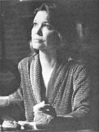
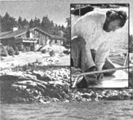

Selected doin's of well-know
MOTHER-types from around the
world
For several centuries now, our society has clung to the notion that science equals progress, and that technology continually creates a more ordered world. However, economist, sociologist, and author Jeremy Rifkin - in his newest book, Entropy: A New World View ( Viking Press, $10.95) - says that our current outlook (which, he claims, is founded upon seventeenth century Newtonian mechanics) will soon break down and be replaced.
The " new " concept, Rifkin explains, takes its cue from the second law of thermodynamics. That principle - the Entropy Law - states that all energy flows from order to disorder. In other words, it moves automatically from its usable and available state to its un usable and un available state.
"Whenever a semblance of order is created anywhere on the earth or in the universe," according to Mr. Rifkin, "it [causes] an even greater disorder in the surrounding environment." The whole universe, then, "is irrevocably moving toward random chaos and waste".
Rifkin relates the entropy paradigm to all aspects of modern life, arguing that this irreversible flow of energy is responsible for runaway inflation, environmental pollution, rising unemployment, and the threat of nuclear warfare.
However, there is some hope. A drastic shift in our world views, as we move from the Industrial to the Solar Age, will bring with it profound changes in the way we live . . . changes that may allow us to survive, Rifkin writes. Our agriculture will become based upon regional organic farms, our industrial production will be scaled down to labor-intensive activities . . . and both the giant metropolis and the multinational corporation will cease to exist.
In short, we can survive the end of the Industrial Age, Rifkin tells us . . . but, he warns, "The movement from a high-entropy to a low-entropy system will transform our values, our culture, our economic and political institutions, and our day-to-day lives. " - JM.
In her latest role, screen actress Ellen Burstyn (who gained fame as the spunky widow in Alice Doesn't Live Here Anymore ) stars in a film that, she hopes, will be a factor in the transformation of our society's spiritual norms and help to bring about a shift in our collective "consciousness of reality".
Resurrection, which will be released by Universal Pictures in November, features Burstyn as a woman who - after nearly dying from injuries received in an auto accident - comes back to life with the amazing power to heal through her hands. To prepare for the unusual role, Burstyn studied the art of "the laying on of hands" . . . in order to learn about the chakras (or seven levels of energy), proper hand placement, and the process of energy transferal. She also practiced a daily regimen of psychocalisthenics, which combines exercise and yoga.
The actress - who has long been interested in Eastern philosophies and mysticism - was initiated in 1971 into the Sufi Order of Pir Vilayat Khan (whose teachings emphasize the altered states of consciousness that can be produced through music and dance). She now hopes that her portrayal of a strong female character in Resurrection may point the way toward a national return to respect for the feminine, intuitive powers of the brain's right side . . . toward a reawakening of "the right hemisphere ways of knowing and states of being in both men and women" . . . which, she says, have been overshadowed for centuries by the masculine (or logical) consciousness.
Ms. Burstyn's next role is an equally ambitious project. She'll play a woman homesteading alone in the Northwest Territory, in a film called Silence of the North. - JM.
Camelot is much more than a fairy tale kingdom for Cincinnati Pops Orchestra conductor Erich Kunzel: It's also the name of his unique estate on Swan's Island, five miles off the coast of Maine. Many years ago - when the young musician spent his summers studying conducting in New England - he often sailed past the rocky shoreline where his house now stands and dreamed of living there.
The road from wish to reality began in 1961, when Erich bought five acres on the island - which is home to about 350 lobstering families - and cleared the property himself, using only a chain saw. The maestro then built a small house, and later (after he married in 1964) began the enormous job of designing and building a dream home . . . a task that took the couple 15 summers to complete.
In the Kunzels' house - a handsome one-bedroom structure facing the ocean - heat is provided by a large woodburning stove (it's fueled by timber from the family's wooded acres) and a floor-to-ceiling fireplace in the living room. In addition, one entire west-facing wall of the house is glassed . . . for passive solar heat collection. The Kunzels grow fruit trees in their indoor solarium, raise vegetables and hogs on their land, and cure meats in the smokehouse. Such products - along with the lobsters they catch and the small game that Kunzel bags on hunting expeditions - allow the couple to be almost entirely self-sustaining.
Kunzel - who travels most of the year with the Cincinnati Pops or as a guest conductor with such major orchestras as the Boston Pops, the Chicago Symphony, and the Toronto Symphony - returns whenever possible to new projects on his island preserve . . . because he feels that anyone who owns land has a duty to cultivate and "caretake" the acres for the benefit of future generations. - JM.
MOM's own DR. TOM FERGUSON (author of our Medical Self-Care column) has edited a book entitled Medical Self-Care: Access to Health Tools (Summit Books, $8.95 in paperback). A veritable encyclopedia of information on birthing, sexuality, drugs, diet, exercise, aging, and death . . . the volume explains the basics of a healthful lifestyle and encourages the layperson to take responsibility for his or her own disease prevention .... More good reading for long winter evenings can be found in HELEN NEARING's new book, Wise Words on the Good Life: An Anthology of Quotations (which is available from Schocken Books for $9.95). . . . NOEL HARRISON, son of actor Rex Harrison and a star of the 1960's television series The Girl From U.N.C.L.E., now spends most of each year at his homestead in Nova Scotia, where he lives with his wife and two children in a four-room log house he built himself. - JM.
|
|
 |
 |